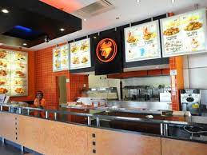

chicken-licken
Chicken Licken is a South African fast-food fried chicken restaurant chain. The company had a 5% share of South Africa's fast food market in 2010, tying with McDonald's. Chicken Licken® is the second biggest fast-food brand in South Africa. get your lick'n® on. time for some soul food®. view South african menu; view Pine City Mall menu. JUST. HOTWINGS ®. SOULICIOUS ®. SPECIALS. CHICKEN.